The original, as published: Tony R. Kuphaldt, Lessons In Industrial Instrumentation, SCADA and telemetry systems. CC BY 4.0, https://creativecommons.org/licenses/by/4.0/. Imported as published, from https://www.ibiblio.org/kuphaldt/socratic/sinst/book/liii.pdf https://www.ibiblio.org/kuphaldt/socratic/sinst/book/liii.pdf
A similar control system architecture to Direct Digital Control (DDC) – assigning a single microprocessor to the task of managing multiple control functions, with digital communication between the microprocessor units – is used for the management of systems which are by their very nature spread over wide geographical regions. Such systems are generally referred to as SCADA, which is an acronym standing for Supervisory Control And Data Acquisition. The typical SCADA system consists of multiple Remote Terminal Unit (RTU) devices connected to process transmitters and final control elements, implementing basic control functions such as motor start/stop and PID loop control. These RTU devices communicate digitally to a Master Terminal Unit (MTU) device at a central location where human operators may monitor the process and issue commands.
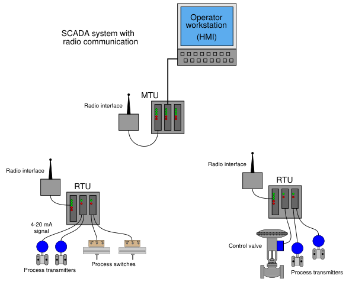
A photograph of an RTU “rack” operating at a large electric power substation is shown here:
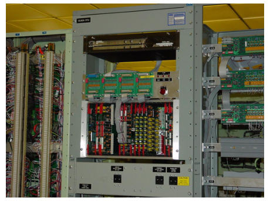
Some RTU hardware, such as the substation monitoring system shown above, is custommanufactured for the application. Other RTU hardware is more general in purpose, intended for the monitoring and control of natural gas and oil production wells, but applicable to other applications as well.
The Fisher ROC 800 – shown in the photograph below – is an example of an RTU designed to operate with a minimum of electrical power, so that a single solar panel and battery will be sufficient for year-round operation in remote environments. The particular unit shown is installed in a natural gas metering station, where is monitors gas pressure, temperature, and flow rate, and also controls the injection of an “odorizing” compound into the gas to give it a bad smell:
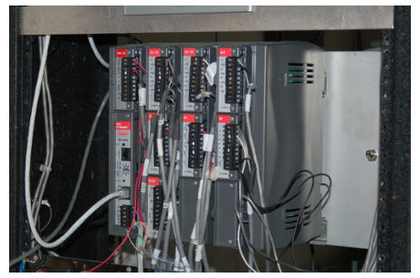
Standard programmable logic controllers (PLCs) are ideal candidates for use as RTU devices. Modern PLCs have all the I/O, networking, and control algorithm capability necessary to function as remote terminal units. Commercially available Human-Machine Interface (HMI) software allowing personal computers to display PLC variable values potentially turns every PC into a Master Terminal Unit (MTU) where operators can view process variables, change setpoints, and issue other commands for controlling the process. A photograph of such HMI software used to monitor a SCADA system for a set of natural gas compressors is shown here:
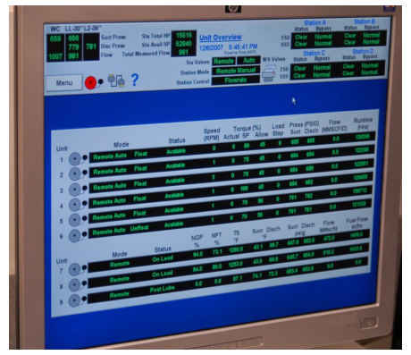
Another photograph of a similar system used to monitor and control drinking water reservoirs for a city is shown here:
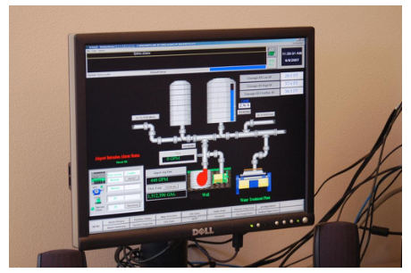
A concept closely related to SCADA is that of telemetry, the word literally meaning “distance measuring” (i.e. measuring something over a distance). The acronym SCADA, by containing the word “control,” implies two-way communication (measurement and control) between the master location and the remote location. In applications where the flow of information is strictly one-way (simplex) from the remote location to the master location, “telemetry” is a more apt description. Telemetry systems find wide application in scientific research. Seismographs, river and stream flowmeters, weather stations, and other remotely-located measurement instruments connected (usually by radio links) to some centralized data collection center are all examples of telemetry. Any industrial measurement (-only) application spanning a large distance could likewise be classified as a telemetry system, although you will sometimes find the term “SCADA” applied even when the communication is simplex in nature.
A radically new concept appeared in the world of industrial control in the mid-1970’s: the notion of distributed digital control. Direct digital control during that era35 suffered a substantial problem: the potential for catastrophic failure if the single digital computer executing multiple PID control functions were to ever halt. Digital control brings many advantages, but it isn’t worth the risk if the entire operation will shut down (or catastrophically fail!) following a hardware or software failure within that one computer. Distributed control directly addressed this concern by having multiple control computers – each one responsible for only a handful of PID loops – distributed throughout the facility and networked together to share information with each other and with operator display consoles. With individual process control “nodes” scattered throughout the campus, each one dedicated to controlling just a few loops, there would be less concentration of liability as there would be with a single-computer DDC system. Such distribution of computing hardware also shortened the analog signal wiring, because now the hundreds or thousands of analog field instrument cables only had to reach as far as the distributed nodes, not all the way to a centralized control room. Only the networking cable had to reach that far, representing a drastic reduction in wiring needs. Furthermore, distributed control introduced the concept of redundancy to industrial control systems: where digital signal acquisition and processing hardware units were equipped with “spare” units designed to automatically take over all critical functions in the event of a primary failure.
35Modern DDC systems of the type used for building automation (heating, cooling, security, etc.) almost always consist of networked control nodes, each node tasked with monitoring and control of a limited area. The same may be said for modern PLC technology, which not only exhibits advanced networking capability (fieldbus I/O networks, Ethernet, Modbus, wireless communications), but is often also capable of redundancy in both processing and I/O. As technology becomes more sophisticated, the distinction between a DDC (or a networked PLC system) and a DCS becomes more ambiguous.
The following illustration shows a typical distributed control system (DCS) architecture:
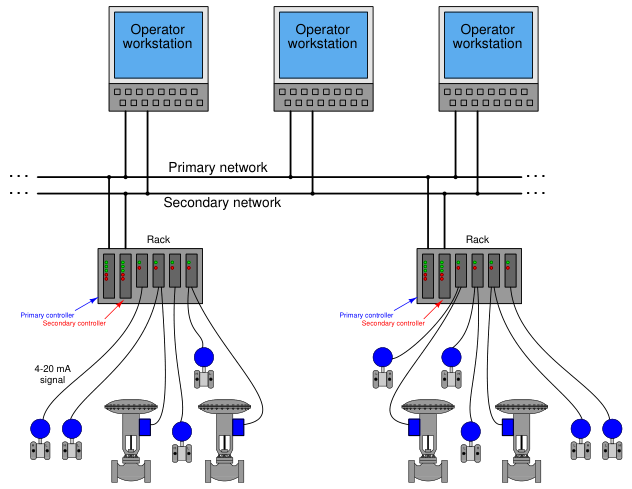
Each “rack” contains a microprocessor to implement all necessary control functions, with individual I/O (input/output) “cards” for converting analog field instrument signals into digital format, and vice-versa. Redundant processors, redundant network cables, and even redundant I/O cards address the possibility of component failure. DCS processors are usually programmed to perform routine self-checks36 on redundant system components to ensure availability of the spare components in the event of a failure. If there ever was a total failure in one of the “control racks” where the redundancy proved insufficient for the fault(s), the only PID loops faulted will be those resident in that rack, not any of the other loops throughout the system. Likewise, if ever the network cables become severed or otherwise faulted, only the information flow between those two points will suffer; the rest of the system will continue to communicate data normally. Thus, one of the “hallmark” features of a DCS is its tolerance to serious faults: even in the event of severe hardware or software faults, the impact to process control is minimized by design.
36An example of such a self-check is scheduled switching of the networks: if the system has been operating on network cable “A” for the past four hours, it might switch to cable “B” for the next four hours, then back again after another four hours to continually ensure both cables are functioning properly.
One of the very first distributed control systems in the world was the Honeywell TDC2000 system37, introduced in 1975. By today’s standards, the technology was crude38, but the concept was revolutionary. Each rack (called a “box” by Honeywell) consisted of an aluminum frame holding several large printed circuit boards with card-edge connectors. A “basic controller” box appears in the left-hand photograph. The right-hand photograph shows the termination board where the field wiring (4-
20 mA) connections were made. A thick cable connected each termination board to its respective controller box:
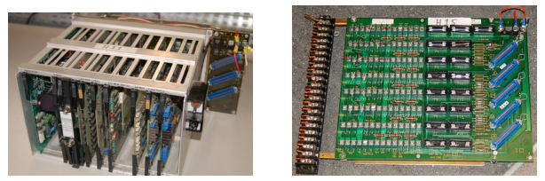
Controller redundancy in the TDC2000 DCS took the form of a “spare” controller box serving as a backup for up to eight other controller boxes. Thick cables routed all analog signals to this spare controller, so that it would have access to them in the event it needed to take over for a failed controller. The spare controller would become active on the event of any fault in any of the other controllers, including failures in the I/O cards. Thus, this redundancy system provided for processor failures as well as I/O failures. All TDC2000 controllers communicated digitally by means of a dual coaxial cable network known as the “Data Hiway.” The dual cables provided redundancy in network communications.
37To be fair, the Yokogawa Electric Corporation of Japan introduced their CENTUM distributed control system the same year as Honeywell. Unfortunately, while I have personal experience maintaining and using the Honeywell TDC2000 system, I have zero personal experience with the Yokogawa CENTUM system, and neither have I been able to obtain technical documentation for the original incarnation of this DCS (Yokogawa’s latest DCS offering goes by the same name). Consequently, I can do little in this chapter but mention its existence, despite the fact that it deserves just as much recognition as the Honeywell TDC2000 system. 38Just to give some perspective, the original TDC2000 system used whole-board processors rather than microprocessor chips, and magnetic core memory rather than static or dynamic RAM circuits! Communication between controller nodes and operator stations occurred over thick coaxial cables, implementing master/slave arbitration with a separate device (a “Hiway Traffic Director” or HTD) coordinating all communications between nodes. Like Bob Metcalfe’s original version of Ethernet, these coaxial cables were terminated at their end-points by termination resistors, with coaxial “tee” connectors providing branch points for multiple nodes to connect along the network.
A typical TDC2000 operator workstation appears in the next photograph:
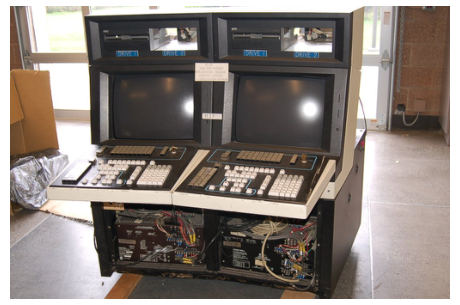
Over the years following its 1975 introduction, the Honeywell system grew in sophistication with faster networks (the “Local Control Network” or LCN), more capable controller racks (the “Process Manager” or PM series), and better operator workstations. Many of these improvements were incremental, consisting of add-on components that could work with existing TDC2000 components so that the entire system need not be replaced to accept the new upgrades. Other control equipment manufacturers responded to the DCS revolution started by Honeywell and Yokogawa by offering their own distributed control systems. The Bailey Network 90 (Net90) DCS, Bailey Infi90 DCS, and the Fisher Provox systems are examples. Foxboro, already an established leader in the control system field with their SPEC 200 analog system, first augmented the SPEC 200 with digital capabilities (the VIDEOSPEC workstation consoles, FOX I/A computer, INTERSPEC and FOXNET data networks), then developed an entirely digital distributed control system, the SPECTRUM. Some modern distributed control systems offered at the time of this writing (2008) include:
For a visual comparison with the Honeywell TDC2000 DCS, examine the following photograph of an Emerson DeltaV DCS rack, with processor and multiple I/O modules:
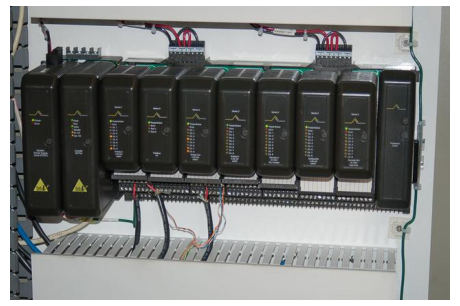
A photograph of an Emerson Ovation DCS rack shows a vertically-oriented backplane accepting multiple I/O modules:
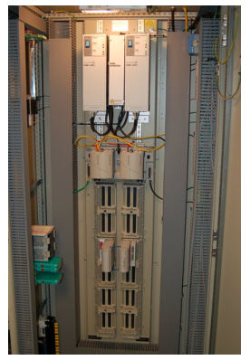
Many modern distributed control systems such as the Emerson DeltaV use regular personal computers rather than proprietary hardware as operator workstations. This cost-saving measure leverages existing computer and display technologies without sacrificing control-level reliability (since the control hardware and software is still industrial-grade):
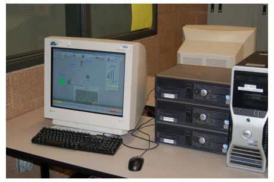
As previously mentioned in the Direct Digital Control (DDC) subsection, programmable logic controllers (PLCs) are becoming more and more popular as PID control platforms due to their ever-expanding speed, functionality, and relatively low cost. It is now possible with modern PLC hardware and networking capabilities to build a truly distributed control system with individual PLCs as the processing nodes, and with redundancy built into each of those nodes so that any single failure does not interrupt critical control functions. Such a system may be purchased at a fraction of the up-front cost of a fully-fledged DCS. However, what is currently lacking in the PLC world is the same level of hardware and software integration necessary to build a functional distributed control system that comes as ready-to-use as a system pre-built by a DCS manufacturer. In other words, if an enterprise chooses to build their own distributed control system using programmable logic controllers, they must be prepared to do a lot of programming work in order to emulate the same level of functionality and power as a pre-engineered DCS39. Any engineer or technician who has experienced the power of a modern DCS – with its self-diagnostic, “smart” instrument management, event auditing, advanced control strategy, preengineered redundancy, data collection and analysis, and alarm management capabilities – realizes these features are neither luxuries nor are they trivial to engineer. Woe to anyone who thinks these critical features may be created by incumbent staffat a lesser cost!
39I know of a major industrial manufacturing facility (which shall remain nameless) where a PLC vendor promised the same technical capability as a full DCS at approximately one-tenth the installed cost. Several years and several tens of thousands of man-hours later, the sad realization was this “bargain” did not live up to its promise, and the decision was made to remove the PLCs and go with a complete DCS from another manufacturer. Caveat emptor!
The DCS revolution started in the mid-1970’s was fundamentally a moving of control system “intelligence” from a centralized location to distributed locations. Rather than have a single computer (or a panel full of single-loop controllers) located in a central control room implement PID control for a multitude of process loops, many (smaller) computers located closer to the process areas would execute the PID and other control functions, with network cables shuttling data between those distributed locations and the central control room. Beginning in the late 1980’s, the next logical step in this evolution of control architecture saw the relocation of control “intelligence” to the field instruments themselves. In other words, the new idea was to equip individual transmitters and control valve positioners with the necessary computational power to implement PID control all on their own, using digital networks to carry process data between the field instruments and any location desired. This is the fundamental concept of fieldbus.
“Fieldbus” as a technical term has multiple definitions. Many manufacturers use the word “fieldbus” to describe any digital network used to transport data to and from field instruments. In this subsection, I use the word “fieldbus” to describe a design philosophy where field instruments possess all the necessary “intelligence” to control the process, with no need for separate centralized (or even distributed) control hardware. FOUNDATION Fieldbus is the first standard to embody this fully-distributed control concept, the technical details of this open standard maintained and promoted by the Fieldbus Foundation. The aim of this Foundation is to establish an open, technical standard for any manufacturer to follow in the design of their fieldbus instruments. This means a FOUNDATION Fieldbus (FF) transmitter manufactured by Smar will work seamlessly with a FF control valve positioner manufactured by Fisher, communicating effortlessly with a FF-aware host system manufactured by ABB, and so on. This may be thought of in terms of being the digital equivalent of the 3-15 PSI pneumatic signal standard or the 4-20 mA analog electronic signal standard: so long as all instruments “talk” according to the same standard, brands and models may be freely interchanged to build any control system desired.
To illustrate the general fieldbus concept, consider this flow control system:
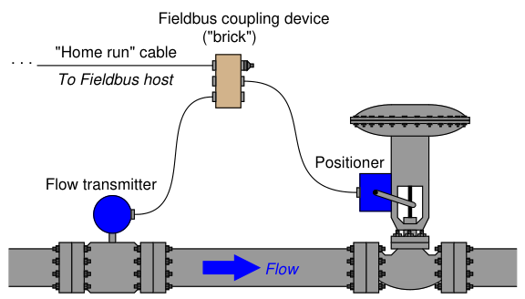
Here, a fieldbus coupling device provides a convenient junction point for cables coming from the transmitter, valve positioner, and host system. FOUNDATION Fieldbus devices both receive DC power and communicate digitally over the same twisted-pair cables. In this case, the host system provides DC power for the transmitter and positioner to function, while communication of process data occurs primarily between the transmitter and positioner (with little necessary involvement of the host system40). As with distributed control systems, FOUNDATION Fieldbus instruments are programmed using a function block language. In this case, we must have an analog input (for the transmitter’s measurement), a PID function block, and an analog output (for the valve positioner) to make a complete flow control system:
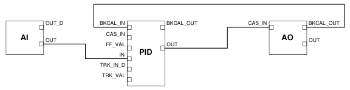
40Although it is customary for the host system to be configured as the Link Active Scheduler (LAS) device to schedule and coordinate all fieldbus device communications, this is not absolutely necessary. Any suitable field instrument may also serve as the LAS, which means a host system is not even necessary except to provide DC power to the instruments, and serve as a point of interface for human operators, engineers, and technicians.
The analog input (AI) block must reside in the transmitter, and the analog output (AO) block must reside in the valve positioner, since those blocks necessarily relate to the measured and controlled variables, respectively. However, the PID block may reside in either field device:
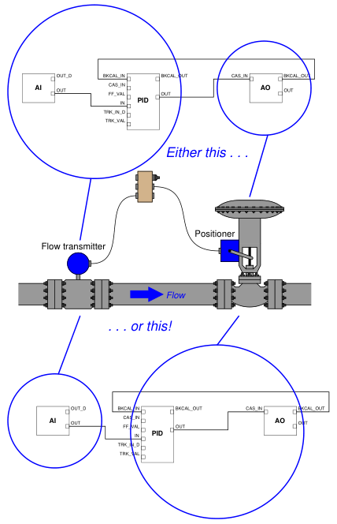
Practical reasons do exist for choosing one location of the PID function block over the other, most notably the difference in communication loading between the two options41. However, there
41With the PID function block programmed in the flow transmitter, there will be twice as many scheduled communication events per macrocycle than if the function block is programmed into the valve positioner. This is evident by the number of signal lines connecting circled block(s) to circled block(s) in the above illustration.
is no conceptual limitation to the location of the PID function block. In a fieldbus control system where the control “intelligence” is distributed all the way to the field instrument devices themselves, there are no limits to system flexibility.